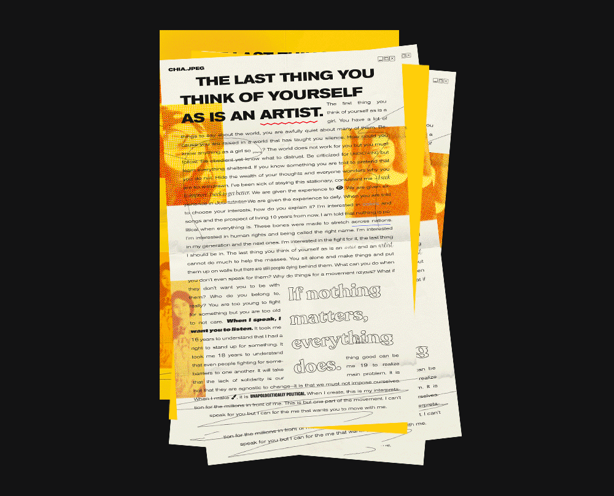

Sophomore Review
Chia Amisola
hello hello hello im so excited to finally be here
bested viewed in full screen on a laptop
spring 2020
On Activism
Kababayan
Sound Art
.systems
.systems—Prompted to create a work of sound art that relates to space, I was interested in touching on security and what we give up in an increasingly digitized world. I built a website that is an endless feed of hundreds of exposed CCTV and camera streams from around the world, provided geographical data mapping to a randomly-generated library of sounds. The user is given buttons to interact with the "feed", ranging from reading into their microphone and braodcasting it to all other watchers. While tapping into vulnerable feeds, the viewer is—too. When you watch the world, it watches you back.
3D Modeling
Round.ph
Round—Is a multiplayer reflective experience on the web. The user (you) is prompted to think about spaces in the world, and recall memories. In every place, you can find the memories others have left as well.
Every stroke on the page is shared, remembered, and experienced altogether.
Art 012: On Activism
A Culture of Respect


Tabloid Posters—first iterations for posters

Visual Thinking
Repentance
Repentance—soundtracked to Sigur Ros' Straumnes, made with Brice Bai, edited by me; repurposed videos from our upbringings, contemplating on religious high school experiences.
ON ACTIVISM
Me and Abortionism
Me and Abortionism—Zine reflecting the journey of a Filipino seeking to terminate their pregnancy. Amidst a conservative Catholic culture that still has abortion outlawed, women resort to backalley abortions and methods.
Digital Video
Everything Not Saved Will be Wiped Away
Everything Not Saved Will Be Wiped Away—An experience made for ART145: Digital Video
Digital Video
Fifteen
Fifteen—A website and installation work about growing up online.
3D Modeling
Third Impact
Third Warui—A VR experience commenting on mortality; exhibited in the CCAM!
Visual Thinking
'Screenplay' Compilation Book
Visual Thinking—Editorial design for a visual thinking class book, compiling works from the semester

Design Manifesto from Visual Thinking 111
Thank You!
open source at github.com/chiaski/sophomore-review